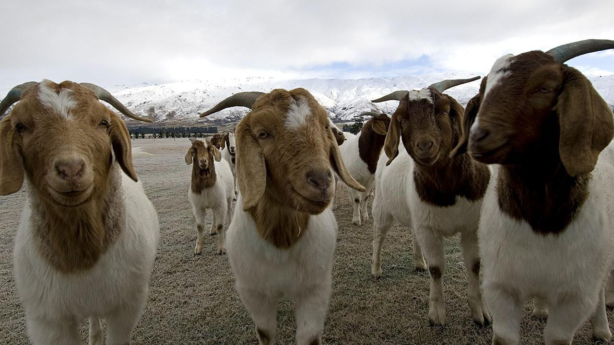
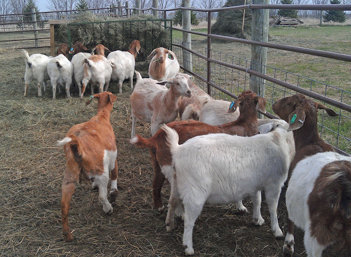
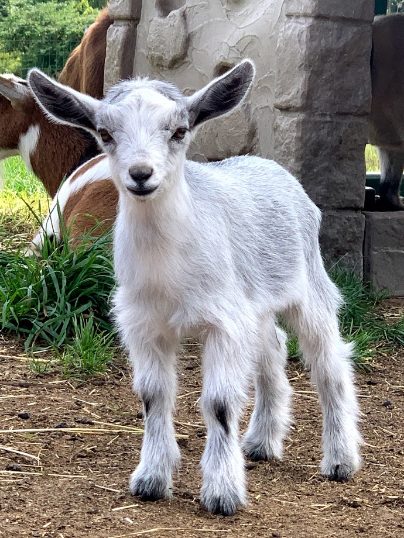

Business Structure
Edan Goat Farm is livestock farms in the industry both in the Karnataka and India
Pricing Strategy
right price that will guarantee that you make profits is dependent on your strategy
Sales Forecast
We have perfecte sales and marketing strategies and we are set to hit the ground running and we are quite optimistic
Do you need our service?
You can contact us directly or can Message, we will contact you back.
Message usAbout Us
We aim in raising and breeding of domestic goats and some other breeds. There are different types of goat breeds available on our farm. Our mission is to sell our product( goats), byproducts, and processed meat in commercial quantities.
Goat Farming is a profession of hope.
The main aims and objectives of the farm are:
- To bridge the gap between demand and supply in livestock products.
- Improving genetic potential of indigenous stock by utilizing modern scientific tools available.
- Ensuring a healthy society by safe guarding against zoonotic disease through surveillance and monitoring of livestock.
To improve the production of wool and mutton both qualitatively and quantitatively so as to improve the socio- economic status of sheep rearing communities on one hand and to meet the demand of wool and mutton to maximum level on other hand by way of extensive cross breeding programme.
Goat Development
Development of goat sector, which remained neglected due to more stress being laid on sheep development, has now been taken up so as to narrow down the gap between demand and supply of meat. The Department has accordingly introduced programmes for development of goat sector.
Fine wool production
The major chunk of Sheep population being migratory in nature, this policy is being continued till date in these migratory, semi-migratory and stationary flocks of colder regions of the farm. Due to introduction of superior fine wool Germplasm in our farm about 65% sheep population has attained desired type of crossbred wool with subsequent increase in body weight.
Mutton production
Appropriate levels of inheritance of muttonous breeds like Dorper, Texel etc. and local sheep shall be identified and introduced after performance evaluation in plain belts of our division.
Fodder Resources
The feed and fodder has a significant bearing on the production of livestock. The agriculture wing of the Department is engaged in cultivation of improved varieties of fodder at different farms and field organizations having the qualities of high volumes, biomass and digestible nutrients. The Department has one Fodder Development Farm at Lam.
HOW WE WORK
Market Trends
One of the common trends in the commercial livestock farming line of business is that most players in the industry are no longer concentrating only on farming a particular species of livestock or just livestock / goat farming alone.
They now find it easier to run both livestock farming and crop cultivation. Some even go ahead to include meat processing and packaging business alongside their product offerings; it helps them maximize profits in the agriculture industry.Despite the fact that commercial goat farming / livestock farming has been in existence since time immemorial, that does not in any way make the industry to be over saturated; commercial goat farmers are exploring new technology to continue to improve goat farming processes and also meat preservation and packaging process. The fact that there is always a ready market for commercial goat farming makes the business ever green.
Target Market
Naturally, the target market of those who are the end consumer of livestock farm produce and also those who benefits from the business value chain of the agriculture industry is all encompassing; it is far – reaching.
Every household consumes produce from livestock farms be it goat meat, goat milk, and the skin (leather) used for bags, belts and shoes production et al. So also a large chunk of manufacturing companies depends on livestock farms for some of their raw materials. In essence a goat farmer should be able to sell his or her farm produce to as many people as possible. We will ensure that we position our business to attract consumers of agriculture produce not just in India alone but also other parts of the world which is why we will be exporting some of our farm produce either in raw form or processed form to other countries of the world.
Competitive Advantage
It is easier to find entrepreneur flocking towards an industry that is known to generate consistent income which is why there are more commercial farmers in India and of course in most parts of the world.
As a matter of fact, entrepreneurs are encouraged by the government to embrace commercial farming / livestock farming. This is so because part of the success of any nation is her ability to cultivate her own food and also export foods to other nations of the world. Another competitive advantage that we are bringing to the industry is the fact that we have designed our business in such a way that we will operate an all – round standard commercial livestock farms that will be involved in diverse areas such as animal rearing and meat processing and packaging plant. With this, we will be able to take advantage of all the available opportunities within the industry. .
Our Breeds
We are having 12 types of breeds like Jamunapari Goat, Mandi Goat, etc. Here displaying cost along with the goat's name.
Barbari Goats
Rs 7,000 / PieceJamunapari Goat
ARs 8,000 / UnitMandi Goat
Rs 4,000 / UnitMalabari Goat
Rs 4,000 / Unit{kind=link}
{kind=link}
{kind=link}
{kind=link}
{kind=link}
{kind=link}
{kind=link}
{kind=link}
Frequently Asked Questioins
Goat farming FAQ (frequently asked questions) are those questions which are asked frequently by the customers.
-
How we Raise Goats in the Backyard?
Goats are great escape artists. So good fencing is required for keeping them confined. Good fencing also helps to protect your goats from predators. We have 60 acres in which our farm is situated.
-
How we Feed the Goats?
This is among the mostly asked goat farming FAQ that most of the people ask. Actually feed for the goats depends on how they are being raised. The goats will require hay if they are not allowed to forage freely. Hay is considered the main part of a goat’s diet if it is not allowed to forage. Other common things as goat’s feed include fruits, weeds, grains, dried fruit, chaffhaye, vegetables, kitchen scraps etc. Baking soda, beet pulp, black oil sunflower seeds, loose minerals, apple cider vinegar, kelp meal etc. Goats require grain for proper growth. Grains provide the goats with additional protein, vitamins and minerals. Grains can be given to the goats in many different ways and there are actually different types of grains available as a feed for the goats. Whole or unprocessed, pelleted, rolled and textured grains are generally given to the goats.
-
How Much Feeds Do Goats Require Daily?
Exact amount of feeds depends on the size and age of the goats. But on an average, a goat will require 3-4 percent of feed of their total body weight.
-
How Many Goat Breeds Available?
There are 12 different goat breeds available in our farm. Some of these breeds are good for milk production, some are good for meat and some goat breeds are good for fiber production.
-
What is the Age of Doe for Reproduction?
Female goats or does generally reach maturity withing their 4 to 12 months of age. A doe become ready for breeding when it reaches a body weight of 60 % to 70 % of the average adult goat weight.
-
When to Wean a Kid?
Generally you can wean a goat kid when it reaches it’s 6 to 8 weeks of age.
Contact
You can freely contact us at anytime.
Our Address
Kavoor temple rd, kavoor.
Manglore.karanataka
Pin:575015
586 seeragapadi,Ariyanur,
Salem
Pin 636308
Tamilnadu
Email Us
info.ind@edanfarms.com
contact@edanfarms.com
Call Us
+91 6238870228